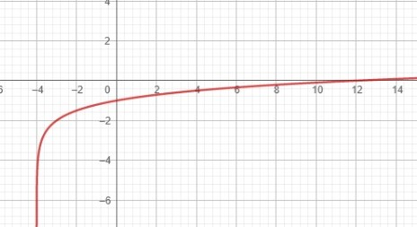
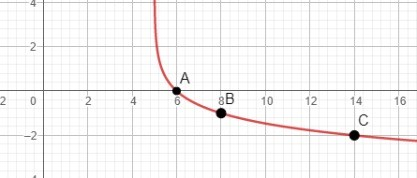

Você conseguiu enfrentar os temidos logaritmos, mas parece que chegou em uma situação mais complexa e difícil. Depois de explorar o país das maravilhas está na hora de você ir embora, mas não será tão simples assim. Agora, terá que enfrentar um xadrez mortal com funções logarítmicas que te deixará com dores de cabeça.
O xadrez é um jogo complexo que requer muita atenção, estratégia e lógica de quem está jogando. Acredita-se que o jogo tenha começado na Índia, onde era chamado de Shaturanga (os quatro componentes de um exército), onde estavam representados a infantaria, cavalaria e o povo (peões e rainha), bem como carroças e elefantes. Porém, com as rotas comerciais o jogo foi levado para China e Pérsia, onde passou a ser chamado de xadrez, por conta da palavra persa shah (rei).
Existe uma lenda por trás do xadrez que diz que um rei indiano foi presenteado com um jogo por um brâmane, como agradecimento ele pediu para que o brâmane pedisse uma retribuição, porém ele pediu algo impossível, pediu que o rei lhe desse grãos de trigo exponencialmente multiplicados para cada uma das 64 casas do tabuleiro, o resultaria em 18.446.744.073.709.551.615 grãos de trigo. Não podendo cumprir isso, o brâmane perdoou a dívida do rei e além de lhe dar o jogo também lhe deu a prudência de não prometer coisas que não pudesse cumprir. Você viu o quão importante é saber sobre expoentes e logaritmos?
Mas voltando ao jogo em si, o tabuleiro do xadrez tem 64 casas, que alternam entre pretas e brancas, identificadas por sua posição colunas alfabéticas e fileiras numéricas (8 colunas e 8 fileiras). Cada jogador possui 16 peças, sendo um com peças brancas e o outro com peças pretas. As peças são compostas por 8 peões, 2 torres, 2 bispos, 2 cavalos, 1 rei e 1 rainha, sendo que cada uma dessas possui recursos de movimentação específicos. Por ser completo de simbolismo, as peças de xadrez também tem seus significados, sendo uma forma de enxergar a sociedade e sua organização.
- Rei: é a peça mais protegida, sua captura resulta em xeque-mate e fim do jogo;
- A Rainha (ou dama): em termos de jogadas, a rainha é a peça mais poderosa do jogo, pois a mesma pode se movimentar em qualquer direção;
- Torre: é uma peça de defesa no jogo;
- Bispo: é uma peça de estratégia, pois pode movimentar várias casas em apenas uma jogada;
- Cavalo: é usado para controle, pois pode se movimentar saltando sobre as demais;
- Peão: apesar de serem as menores peças, o peão é essencial em todas as etapas do jogo.
Assim o objetivo do jogo é aplicar um checkmate no seu adversário e ao mesmo tempo não deixar que ele aplique no seu rei. O checkmate é quando o rei não pode ser movido para nenhuma posição e/ou não tem nenhuma peça lhe protegendo.
Então agora é a sua vez de proteger seu rei e fazer um checkmate no da rainha de copas para que possa sair de wonderland. Tome cuidado e utilize sua lógica na hora de utilizar as funções logarítmicas, para não perder e não se enganar assim como aconteceu com o rei indiano.
A função logarítmica de base a é definida como 𝑓(𝑥) = log𝑏𝑥, com 𝑏 real, positivo e 𝑏 ≠ 1. A função inversa da função logarítmica é a função exponencial.
𝑓(𝑥) = log𝑏𝑥
Era de se esperar que a função logarítmica e a exponencial tivessem suas similaridades, mas como dito anteriormente elas são inversas, enquanto, por exemplo, a função expoencial 23 = 8, a função logaritmica log28 = 3. Além disso, há uma simetria entre elas.
Gráfico
Para fazer o gráfico da função exponencial passaremos por algumas etapas!
1. Analisar o crescimento/decrescimento
Para sabermos se o gráfico é crescente ou decrescente precisamos analisar sua base e levar em consideração que:
𝑏 > 0 -> Crescente
0 < 𝑏 < 1 -> Decrescente
Mas devemos lembrar que o sinal na frente do log também influência, por exemplo, se a base for maior que 0 mas o sinal for negativo será descrescnete, já se a base for menor que 1 e o sinal por negativo, o gráfico será crescente.
2. Determinar o conjunto domínio
O domínio de uma função representa os valores de x onde a função é definida. No caso da função logarítmica, devemos levar em consideração as condições de existência do logaritmo. Por conta disso, não podemos chutar valores e precisamos analisar o domínio da função antes de construir o gráfico. O domínio vai nos mostrar a assíntota do gráfico, o máximo até onde ele pode se inclinar no eixo x. Vamos ver alguns exemplos a seguir de domínios:
a)𝑓(𝑥)=1+log2𝑥
D=(0,+∞)
b)𝑓(𝑥)=2.log3(𝑥+4)
D=(-4,+∞)
c)𝑓(𝑥)=log5(1-3𝑥)
D=(-∞,1/3)
3. Interseção no x e no y
Caso o gráfico tiver interseção no eixo x é importante descobrirmos sua raíz, para isso basta fazermos com que 𝑓(𝑥)=0. Além disso também temos a interseção com o y, que só acontecerá caso os valores achados no domínio sejam menores que 0, nesse caso para achar a interseção no eixo y teremos que fazer com que o x seja 0. Vamos ver um exemplo de gráfico onde acharemos essas interseções:
𝑓(𝑥) = - 2 + 1/2log2(𝑥 + 4)
1°: é crescente
2°: x+4>0 -> x>-4
0=-2+1/2log2(x+4)
2=1/2.log2(x+4)
4=log2(x+4)
24=x+4
x=12
𝑓(0)=-2+1/2log2(x+4)
𝑓(0)=-2+1/2log24
𝑓(0)=-2+1/2.2
𝑓(0)=-2+1
𝑓(0)=-1
3°: y = 0 -> x = 12
x = 0 -> y = -1

4. Encontrar pontos
Você deve estar pensando o porquê de ter mais um passo se conseguimos fazer um gráfico sem ele, na realidade o gráfico que fizemos tinha tanto interseção no x quanto no y, então foi fácil construírmos, mas no caso de não ter precisariamos encontrar pontos aleatórios pelo gráfico. Vou te mostrar um exemplo:
𝑓(𝑥) = - log3(x - 5)
1° é decrescente
2° x > 5
3° como o domínio 5, então não tem interseção no y, assim faremos só o do x
0 = -log3(x - 5)
30 = x - 5
x = 6
Já que só temos um ponto, precisaremos atriubuir valores a x e descobrir o restante dos pontos.
| x | y |
|---|---|
| 8 | -log3(8-5)=-1 |
| 14 | -log3(14-5)=-2 |

Família de Funções Logarítmicas
Podemos obter outras funções logarítmicas a partir da modificação dos valores dos seguintes coeficientes:
𝑓(𝑥) = A + B logb(C𝑥 + D)
- A -> deslocamento vertical, para cima e para baixo.
- B -> inclinação da curva. Se B < 0 a curva muda seu crescimento
- C -> modificações verticais
- D -> deslocamentos horizontais
D < 0 -> para direita
D > 0 -> para a esquerda

Aqui você poderá ver um pequeno resumo que eu fiz para a prova.

Dá até desanimação em apenas falar sobre funções logarítmicas, se já tive problemas com logaritmos imagina com esse conteúdo. Eu realmente acredito ter sido o conteúdo mais difícil do ano, principalmente a elaboração de gráficos. Acho que não consegui fazer se quer um gráfico sem a ajuda da professora.
Vou ser sincera que ainda não entendi muito bem e tenho um certo medo de encarar a prova que vem por aí, estou com as expectativas para esse conteúdo lá em baixo. Também não consegui resolver a maioria dos exercícios propostos e ainda tenho uma certa dificuldade para entender como alguns foram feitos. Mas acho que o meu maior problema mesmo é o domínio da função, é algo que não entendo desde o começo do ano por mais simples que possa parecer.
{kind=link}
{kind=link}